The 45 Most Exotic Universities
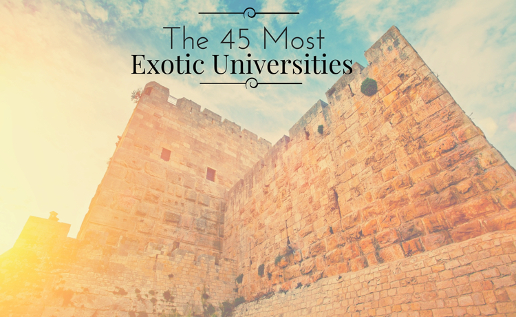
ex·ot·ic, adjective
1. Originating in or characteristic of a distant foreign country.
2. Attractive or striking because colorful or out of the ordinary.
3. Of a kind not used for ordinary purposes or not ordinarily encountered.
A college education is much more than classes. It is a time for growth, a time when students broaden their horizons beyond the walls of their upbringing to experience all the world has to offer. For those with a wanderlust, studying at a foreign university could be just what the doctor ordered. Never before have college students had the opportunities that are now available to study in some of the world’s most unique and exciting places. We have compiled a list of some of the most exotic universities in the world – from the shores of Africa, the ancient city of Jerusalem, the outback of Australia, and to the rich culture and history of Europe – college students, the world is waiting.
The following list is not meant to be a ranking of the top universities in the world. It is a list of unique and exotic places to study. The universities were chosen and ranked based on the following criteria:
• The university must be at least 50 years old and a research university. – 5%
• Campus grounds, history, and accessibility to the greater area. – 35%
• The 2015 Institutional Ranking from the Academic Ranking of World Universities (ARWU). – 25%
• Each university was given an “exotic factor.” – 35%
45. University of Salamanca

It is not every university that can boast that Miguel de Cervantes, author of Don Quixote, is a graduate, but the University of Salamanca claims this world-renowned author. Founded in 1094 and given the Royal charter of foundation by King Alfonso X in 1164, the University of Salamanca is the oldest university in Spain and the second oldest European university in continuous operation. There are over 30,000 students in attendance, making the school a primary source of income in the Spanish city of Salamanca. Salamanca boasts a remarkable history, the city itself was founded in the pre-Roman period by the Vaccaei, a Celtic tribe. In the 3rd century B.C., the infamous Hannibal laid siege to the city. When the Carthaginians fell to the Romans, the city became an important commercial hub in the Roman Empire. With a historical pedigree like Miguel de Cervantes and the historically rich city of Salamanca, the University of Salamanca is striking, to say the least.
44. Central University of Venezuela

With a motto as riveting as, “The house that defeats the shadows”, Central University of Venezuela ought to automatically be considered one of the top. The University is the oldest, and considered by some, the best university in Venezuela. It was founded in 1721 out of the work of Catholic Friar Antonio González de Acuña. Since then, it has developed into a top research university in agronomy, veterinary science, humanities, and more. The University has multiple research centers and experimental stations and serves about 60,000 students. The main campus was designed by architect Carlos Raúl Villanueva and was declared a World Heritage Site by UNESCO in 2000. The city adds much to the feel at the University of Venezuela; Caracas is the largest city in Venezuela with about 5 million people and functions as the cultural capital with many events, festivals, theatres, night light, malls and restaurants.
43. University of Freiburg
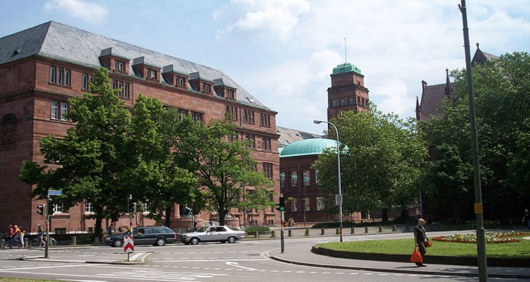
The University of Freiburg, or as it is officially known, the Albert Ludwig University of Freiburg, is a public research university located in Freiburg, Germany. Founded in 1457 by the Hapsburg dynasty, it is the fifth oldest university in Germany, and is known as one of the elite universities in the country by academics, political representatives, and the media. It is one of Europe’s top research and teaching institutions. Freiburg, Germany is known for its high standard of living and advanced environmental practices. Situated in the heart of the Baden wine growing region, it is a primary tourist spot and entry point to the scenic Black Forest. It is also the sunniest and warmest city in Germany. This picturesque German city is rich in history, culture, recreation, and education.
42. National University of San Marcos

Founded in 1551 by the Royal Decree of the Holy Roman Emperor Charles V, the National University of San Marcos has a strong history and pedigree. In fact, it is the oldest university in the Americas and is called the “Dean of America.” The University now has about 35,000 students and is respected for academics and research as well as being home to important public institutions – the San Marcos Cultural Center and the Museum of Natural History of Lima. Also worth noting is that Nobel Prize laureate Mario Vargas Llosa is an alumni. The city of Lima also offers the student much. It was conquered by the famous conquistador Francisco Pizarro and now has a population of about 10 million. It is the largest and most important city in Peru and is the center of industry, commerce, culture, and cuisine; the city has been influenced by a unique blend of European, Andean, African, and Asian Culture. Notably, the Historic Centre of Lima was declared a UNESCO World Heritage Site in 1988.
41. University of Vienna
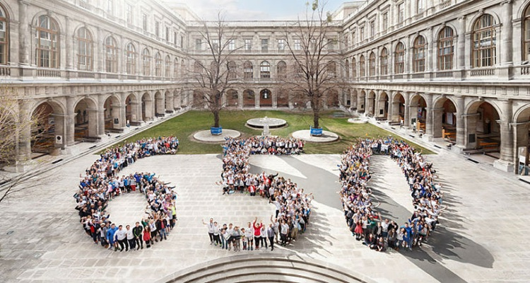
In 2015, the University of Vienna celebrated its 650th anniversary, where the Alma Mater Rudolphina Vindobonensis worked with about 9,700 employees and 93,000 students organized various events to emphasize the importance of teaching and research at the university. The University of Vienna was founded in 1365 by Duke Rudolph IV in 1365, and is one of the oldest universities in the German-speaking world, and today is one of the most renowned and largest in Europe. Currently, almost 6,900 scholars undertake research and teaching at the University covering a wide spectrum of topics including: Catholic and Protestant theology, law, economic sciences and computer science, philological-cultural studies and historical-cultural studies, social sciences and psychology, life sciences and natural sciences, mathematics, sports sciences and teacher education.
40. University of Coimbra
Founded in 1290, the University of Coimbra is the oldest academic institution in the Portuguese speaking world, not to mention the entire world. There are currently 24,000 students engaged in many fields of study and research. The city of Coimbra is teeming with history. There are many archaeological structures dating back to the Roman Era, when it was the settlement of Aeminium. Today, there are still well-preserved aqueducts and cryptoporticus, along with historical buildings of Middle Ages. Travelers may get the feeling they’ve stepped back in time to another planet when exploring this ancient city. In 2013, the University was added to the World Heritage List by UNESCO.
39. University of Mumbai

The University of Mumbai is one of the first three state universities of India and offers many degrees, disciplines and fields of study. Notable alumni include Mahatma Ghandi, leader of the Indian Independence Movement and Father of the Nation of India. In terms of the number of students, the University of Mumbai is one of the largest in the world with over 500,000. It has been granted a Five Star status by the National Assessment and Accreditation Council. The University is comprised of two campuses that include 22,000 sq. feet of classrooms, 84,000 sq. feet of laboratory space, two post-graduate centers, 354 affiliated colleges, and 36 departments. According to their website, “There is 156 [percent] increase in the number of research papers published in International journals.” Located in the exotic country of India, the University of Mumbai combines a top-notch education at an extraordinary location.
38. University of Sydney

The University of Sydney is a public research university in Sydney, Australia. Australia’s first university, founded in 1850 and serving 53,000 students, it is one of the most prestigious schools in the country. It is home to the second largest body of students and researchers among Australian universities. There are a number of off-site facilities used by the University for teaching and researching. A few of these include One Tree Island, an island situated on the Great Barrier Reef Marine Park, the IA Watson Grains Research Centre, located at Narrabri in north-central New South Wales, and the Molonglo Observatory, located in the Australian Capital Territory. Not only is the University of Sydney located near Australia’s famous South Pacific coastline, the campus is often recognized as one of the most beautiful in the world.
37. University of Lagos
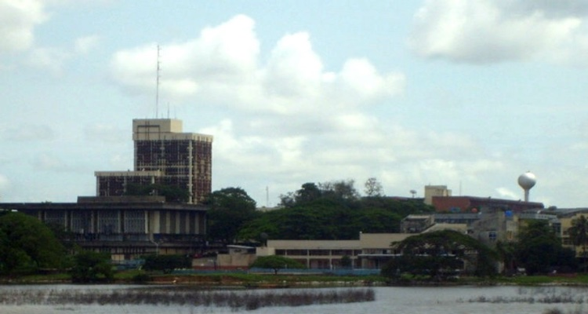
Founded in 1962, the University of Lagos is known as the “University of First Choice and the Nation’s Pride.” The University is a center for academic research and has provided qualitative and research-oriented education to all students. It was founded after Nigeria gained its independence to help the country invest in the training of a professional workforce. Today, the University is home to over 45,000 students and has a legacy of academic excellence. Lagos is the most populous city in Nigeria, with over 16 million people, and an important economic hub in Nigeria and all of Africa. It borders the Atlantic Ocean to the south, establishing the city as an important port.
36. Yonsei University
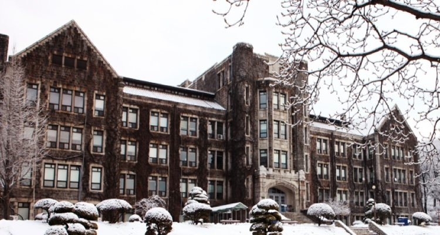
A private research university in Seoul, South Korea, Yonsei University is one of Korea’s three “SKY” universities, which are considered the most prestigious in the country. Established in 1885, Yonsei University is one of the oldest universities in South Korea. Seoul, the capital of South Korea, is located along the Han River, with a deep history that dates back more than two thousand years when it was founded in 18 B.C. by Baekje, one of the Three Kingdoms of Korea. The city is stunning, surrounded by majestic mountains, the tallest being Mt. Bukhan at 2744 ft., which is the world’s most visited national park per square foot. Not only is Seoul situated amongst a beautiful landscape, the city is home to five UNESCO World Heritage Sites including the Royal Tombs of the Joseon Dynasty.
35. University of Basel
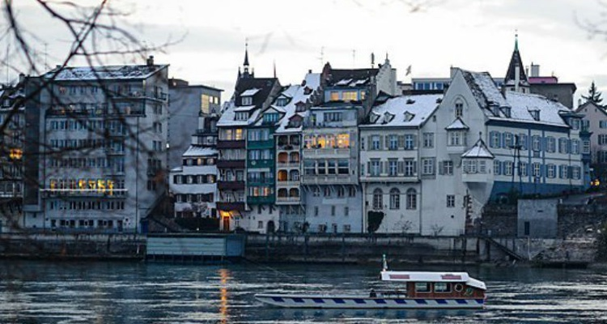
The University of Basel attracts students from Switzerland and all over the world, offering outstanding studying conditions in gorgeous Switzerland. The University is home to around 13,000 students from over 100 nations, including 2,700 PhD students. Due to its research achievements, the University is regularly recognized as one of the leading research universities in the world. There are seven faculties covering a wide spectrum of academic disciplines that share a focus on five strategic areas: life science, visual studies, nanoscience, sustainability and energy research, and European and global studies. The University of Basel boasts past faculty members such as Erasmus, Paracelsus, Daniel Bernoulli, Leonhard Euler, Jacob Burckhardt, Friedrich Nietzsche, Tadeusz Reichstein, Karl Jaspers and Karl Barth. Pleasantly situated where the French, German, and Swiss borders meet along the Rhine River, Basel is an important cultural center in Switzerland and offers many delightful attractions.
34. University of Oxford
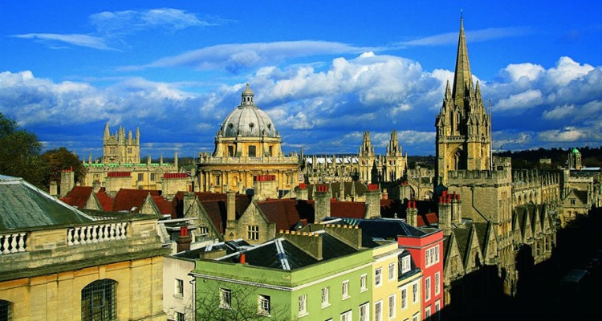
There cannot be a list of top universities in the world without including Oxford University. Although it may not seem as exotic as others on the list, for those who love all things English, Oxford is most certainly attractive and out of the ordinary. Oxford embodies the very idea of “university.” A top university in every way, the University of Oxford has no known foundation, there is evidence of teaching as far back as 1096, making it the oldest university in the English-speaking world and the world’s second-oldest surviving university. Home to the largest university press in the world and the largest academic library system in the United Kingdom, Oxford is located in the beautiful country of England. High culture and some of the greatest intellectuals of all time have come out of this prestigious university including 27 Nobel Laureates, 26 British Prime Ministers, and numerous foreign heads of state.
33. Gadjah Mada University
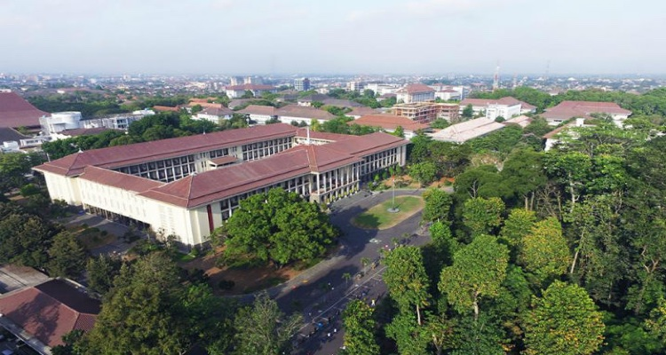
Gadjah Mada University is located in Yogykarta, Indonesia. Yogykarta means, “city that is fit to prosper,” which is suitable indeed. Once the capital during the Mataram Sultunate, the last Javanese independence before the Dutch came, and the capital once again during the Indonesian National Revolution from 1945-1949, the city contains rich history and is a center of tourism and education. The city has the largest Hindu temple in Indonesia, one the biggest Buddhist temples in the world, the Sultan’s Palace in the city center, not to mention the charming Dutch architecture left from their colonization of the area. The population of Yogykarta is about 400,000 and Gadjah Mada University is oldest and largest university in the city with about 55,000 students. There are numerous different areas of research with 27 research centers in many different fields.
32. Bosphorus University
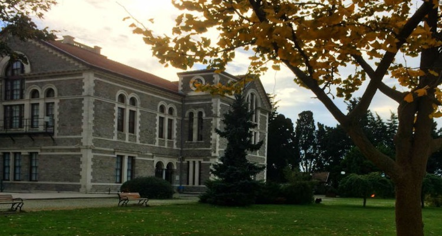
Byzantium, Constantinople, and Istanbul are names for the same incredible city that has been the center of life and culture for multiple different empires and civilizations for over 2000 years. From being an important city for the Roman, Byzantine, and Ottoman Empires, to the current state of Turkey, Istanbul is exotic, historic, and intriguing. Bosphorus University is located on the European side of the Bosphorus Strait. It was founded in 1863 as Roberts College by Americans Christopher Roberts and Cyrus Hamlins. Since then, it has gone on to become a premier university of research in applied sciences, engineering, education and social sciences with a powerful global vision. The University serves about 11,000 students.
31. Chulalongkorn University

Chulalongkorn University, or Chulu, is a research university in Bangkok, Thailand. It started as the Royal Pages School under the monarchy of King Chulalongkorn in 1902; in the 1920’s the Rockefeller Foundation assisted in its evolution. Chulu is one of the National Research Universities in Thailand, a member of Association of Pacific Rim Universities (APRU). Admission to CU is highly selective and academic uniforms are required. It is considered the best research university in Thailand with a focus on biotechnology, metallurgy, energy, social issues, genetics and the environment. Bangkok is a vibrant city that is a regional economic and cultural leader. With a rich cultural heritage of food, history, dress, dance, and festival plus a blend of modern values, Bangkok offers a unique backdrop to this top research university.
30. University of Otago

Within an hour’s drive of the University of Otago, students can explore some of New Zealand’s most spectacular scenic and outdoor attractions. A short day trip will lead students to any of the southern lakes, high mountain valleys, rivers and secluded beaches. Only three or four by car and students will find themselves at the internationally renowned resort of Queenstown which offers opportunities to ski, snow board, parapent, jet boat, white-water raft, and bungee jump. The University of Otago is New Zealand’s oldest university with almost 21,000 students enrolled. It is a leading research university which boasts New Zealand’s highest research quality and has a large number of A-rated academic researchers employed.
29. Xiamen University

Since its founding in 1921, Xiamen University, which is located in the Siming Distict in southwestern Xiamen, has produced more than 200,000 undergraduates and graduates. Xiamen University has 27 schools containing 76 departments and 10 research universities. The main campus is pleasantly situated at the foothills of Dongping Mountain, facing the ocean and surrounded by Xiamen’s Bay. The picturesque campus serves as one of the main tourist attractions in Xiamen, and is next door to several Botanical Gardens. The city of Xiamen is a popular tourist destination; visitors enjoy the Wanshilian Temple, Gulangyu Garden, South Putuo Temple, and Mount Tianzhu, to name a few.
28. University of Chile

Beginning in 1843, the University of Chile has been integral to modernization, technology, and research in Chile. It is located in the capital of Chile, Santiago. Santiago is an old city, founded in 1541 and is the largest and most important city in the country, responsible for 45 percent of the country’s GDP. With a population of seven million and with views of the Andes Mountains, the setting is beautiful and full of history and culture. The University of Chile has aided in Santiago’s development with research and knowledge. The University has more than 38,000 students and offers numerous degrees in many areas of study. Interestingly, notable alumni include Nobel laureates Pablo Neruda and Gabriela Mistral as well as 20 Chilean presidents.
27. National Taiwan University

Located in Taipei, Taiwan, National Taiwan University is a co-educational research university that consists of 11 colleges, 54 departments, 103 undergraduate institutions, four research centers, and over 32,000 students. The University was founded in 1928 by the Japanese during the Japanese colonial era; today it is known as one of the most prestigious universities in Taiwan. There are five campuses in the greater Taipei region, and two additional campuses in Nantou County. The University governs farms, forests, and hospitals for education and research. Taiwan is an island country with broad plains, rolling hills, and a mountain range that forms the spine of the island. Geothermal activity has produced ample hot springs deep in the mountains. Due to its tropical location and abundant rainfall, there is diverse vegetation, making Taiwan an enchanting place to live.
26. University of Padua
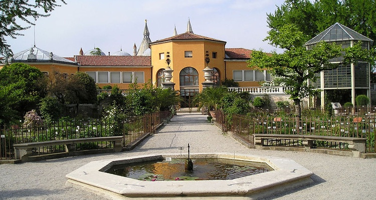
The University of Padua boasts a rich and fascinating history. Founded in 1222 after a group of students and professors left the University of Bologna in search of more academic freedom, the University of Padua quickly became one of the most prominent universities in early modern Europe. It is among the earliest universities in the world and the second oldest in Italy. The University of Padua is home to the Botanical Garden of Padova, which was established in 1545; it is one of the oldest gardens of its kind in the world after the Hanging Gardens of Babylon. Beginning at its conception, the University began teaching medicine and played a leading role in the identification and treatment of diseases and ailments specializing in autopsies and the inner workings of the body. Not only is this school rich in history, it is located in the culturally rich country of Italy, birthplace of the Renaissance, the Roman Empire, and the Papacy.
25. University of the Witwatersrand

The University of the Witwatersrand is located in Johannesburg, South Africa, and is more commonly known as Wits University. It is a public research university spread out over multiple campuses in the northern areas of Johannesburg. Founded in 1896, it is the third oldest South African university in continuous operation. During the apartheid period from 1959 to 1994, the University underwent significant change, yet always upheld opposition against apartheid policies and remained committed to academic freedom. Today, the University has a strong academic reputation both in South Africa, and the world, ranking in the top 200 in the last few years in the Shanghai Ranking. Lastly, and worth mentioning, there are 13 externally funded research institutions at the University, as well as more than 350 Nation Research Foundation rated researchers.
24. Shanghai Jiao Tong University

Established in 1896 by imperial edict issued by the Guangxu Emperor, Shanghai Jiao Tong University is one of the oldest and most prestigious universities in China. This public research university has 31 schools, 63 undergraduate programs, 250 master’s degree programs, 203 doctoral programs, 28 post-doctoral programs, and 11 state key laboratories and national engineering research centers. There are over 42,000 students, over which 1,500 are international students. These impressive statistics, along with its international reputation places Shanghai Jiao Tong University as a world leader in higher education. Shanghai is the largest Chinese city by population both in China and the world, with over 24 million people. It is a global financial center, and a transport hub with the world’s busiest container port. It is comfortably situated on the south edge of the mouth of the Yangtze River in the middle portion of the Chinese coast, and is bordered to the east by the East China Sea.
23. University of Zurich
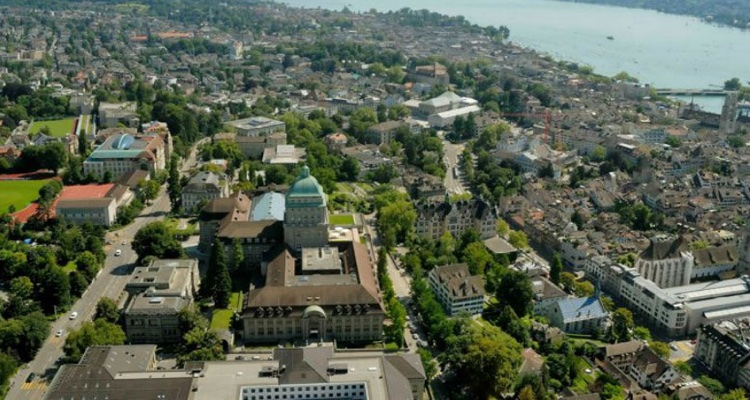
Zurich, Switzerland is a leading global city and among the world’s largest financial centers with a large number of financial institutions and banking giants. Spread out over this European city, the University of Zurich is the largest university in Switzerland, with over 26,000 students. Although the University was founded in 1833, the Irchelpark campus was not established until 1979. Zurich is home to the Zurich Hauptbanhof, which is the world’s most frequently served railway station, with 2915 trains every day. It is an important railway hub in Europe, and anywhere from 350,000 and 500,000 commuters pass through daily. Not only is Zurich a financial and travel hub, the pleasant location in the Alpine country of Switzerland provides students at the University of Zurich with an inspiring setting to call home.
22. Stellenbosch University

Situated on the banks of the Eersterrivier, or “First River,” encircled by picturesque mountains, in the famous wine-growing region, Stellenbosch University is a leading South African public research university. The University is home to more than 29,000 students, 3,000 of which are foreign students, a lecturing staff of over 900, and 50 research and service divisions. Stellenbosch boasts a beautiful location and mild Mediterranean climate, which makes it the perfect location for viticulture. Three valleys form the Cape Winelands, the larger of the two main wine growing regions in South Africa. The South African wine industry produces over 1 million liters of wine annually; Stellenbosch is the primary location for viticulture and viticulture research.
21. Utrecht University

One of the oldest universities in the Netherlands, and one of the largest in Europe, Utrecht University is located in Utrecht, the Netherlands. One of the most prestigious research universities in all of Europe, Utrecht boasts many notable alumni including Nobel Prize winner Christiaan Eijkman, one of the first to discover vitamins, neuro-pharmacologist David de Wied, and Nobel Prize winner, theoretical scientist Gerard ‘t Hooft. There are over 30,000 students and 6,000 staff at Utrecht. Interestingly, Utrecht University runs a program of guided city tours, led by a team of student guides that gives visitors a glimpse into the history of the university, telling the fascinating story of Utrecht’s beginning, dating back to March 26, 1636. Utrecht University is an excellent combination of academic prowess found in one of the world’s most captivating cities.
20. Alexandria University

Located in one of the most ancient and amazing cities in the world with history stretching back to the birth of civilization, Alexandria University is fitting for premier research, innovation, and intellectual development. When one begins to consider the history of the city of Alexandria, it becomes apparent this was, and is, unique, striking, and intriguing. The city was founded in 331 B.C. by Alexander the Great. The Lighthouse of Alexandria, built by Ptolemy II in around 280 B.C. and rising 120 ft. is one of the Wonders of the Ancient World. Founded in 1938, AU has changed names and developed much since its inception. There are currently about 130,000 students in many different faculties. According to the AU website, the priorities of research include biotechnology, nanotechnology, automation, engineering, and energy, to name a few.
19. Tomsk State University

Tomsk State University is the oldest university in Siberia. Originally founded in 1880, with medical science as the only area of study, Tomsk State University now has 20,000 students with impressive research offerings and academic opportunities. The campus has 10 museums, an herbatoriam, the Siberian Botanical Gardens, swimming pools, and a large research library all creating an exotic and intriguing atmosphere for learning and living. In regards to the education offered and the University, there are many high-quality areas: the Centre for Joint International Academic Programs, distance learning, the Research Center in Semiconductor Materials and Technology, and the Research Center in Theoretical Physics.
18. University of Iceland

In 1911, 45 students began their education in one of four fields: humanities, theology, medicine or law. One-hundred and five years later, and now called the University of Iceland, there are 14,000 students and it is largest single work-place in the country. Reykjavik, the northernmost capital in the world with a population of about 200,000, provides an ideal setting for awe, beauty, educational and entrepreneurial opportunity. The fascinating history of the city traces back to the Norseman in the 9th century and recently has emerged as an important city in the world. The climate and culture of Iceland provide rich and unique opportunities for research such as the Nordic Volcanological Centre, the Árni Magnússon Institute for Icelandic Studies, and the Vigdís Finnbogadóttir Institute of Foreign Languages. All in all, the University of Iceland ranks high amongst the most exotic schools in the world.
17. King Saud University

Located in Riyadh, Saudi Arabia, King Saud University was founded in 1957 as the first university in the Kingdom of Saudi Arabia and was created to meet the educational and professional needs of a young nation. Today it has grown into a university with over 65,000 students. Tuition is free, and generous scholarships are available for both Saudi and international students. In 1982, the main mosque for the University was designed by Dr. Basil Al Bayati; his design incorporated the motif of the palm trunk, as used in the very first Mosque of the Prophet in Medina. The Palm Mosque is highly praised and has even claimed to “mark the beginning of a new era and revival in Islamic architecture.” The mission of King Saud University is “to provide students with a quality education, conduct valuable research, serve the national and international societies and contribute to Saudi Arabia’s knowledge society through learning, creativity, the use of current and developing technologies and effective international partnership.”
16. Aristotle University of Thessaloniki

Founded in 1925 in Thessaloniki, Aristotle University is the largest university in the Balkans with about 40,000 students. The city of Thessaloniki is historic in multiple respects: The birthplace of “The Philosopher”, as Aristotle is known in European History, is about 55 km from the city, and Thessaloniki is also a city for which a book of the Bible is written. This fascinating city contains Byzantine, Jewish, Greek, Roman, and Ottoman historical sites and influences. It is the second largest city, key economic port and center, and the cultural capital of Greece with many festivals, events, and activities. Aristotle University is part of the vibrant cultural dynamic of Thessaloniki and boasts many attractions, most notably top international research programs and opportunities. There over 250 research laboratories with 4500 research programs in the last 12 years. Their website indicates a Center for Archeological Excavation Projects, the Research Center for Byzantine Studies, Integrated Water Management, and more.
15. University of Edinburgh

The entire city of Edinburgh is listed as a World Heritage Site, and it is easy to see why. Stunning Georgian and Victorian architecture, winding medieval streets, a castle overlooking the city, and rich Scottish history permeate every part of Edinburgh, Scotland. Nestled in this alluring medieval city, the University of Edinburgh has been providing a first-rate education since 1582. It is the sixth oldest university in the English-speaking world, and one of Scotland’s ancient universities. During the Age of Enlightenment, the university played a chief role in leading Edinburgh to its reputation as a chief intellectual center, giving the city the nickname the “Athens of the North.” Notable alumni include physicist James Clerk Maxwell, naturalist Charles Darwin, philosopher David Hume, mathematician Thomas Bayes, surgeon Joseph Lister, signatories of the Declaration of Independence James Wilson, John Witherspoon and Benjamin Rush, inventor Alexander Graham Bell, and famous authors such as Sir Arthur Conan Doyle, Robert Louis Stevenson, J.M. Barrie and Sir Walter Scott.
14. University of Helsinki

The history of the University of Helsinki began in the 17th century as a boys school to train men for the Catholic Church and has since gone through several phases and name changes until Finland gained independence in 1917. Now serving about 35,000 students in many disciplines with 11 research institutes and producing 10,000 publications a year, it is a premier research university in a fascinating location. UH is also a member of the League of European Research Universities, an association of 21 leading European universities promoting the conditions and opportunities for basic research in Europe. There are multiple campuses that make up the University, but the City Centre Campus is worth mentioning. Built and blended in with the historic center of Helsinki, with Neo-Classical, Jugendstil, and 20th century Modernist architecture, as well as the Senate Square, makes for an education in itself in a charming setting. Helsinki displays the distinct people, culture, and language of Finland that add to the experience at the University of Helsinki.
13. University of Oslo

The University of Oslo is a classical university with a broad range of disciplines. The University has many research opportunities and currently has eight National Centers of Excellence. There is a strategic focus on interdisciplinary research in the field of energy and life sciences. Until 1939, the University of Oslo was named the Royal Frederick University, and is the oldest and largest university in Norway. The University’s old campus was strongly influenced by Prussian architect Karl Friedrich Schinkel, and reflects a neoclassical style. It is located in the center of Oslo near the National Theater, the Royal Palace, and the Parliament, though today, most of the faculties have moved to the Blindern campus, found in the suburban West End. Norway, with its thousands of fjords, has coastlines that recognized to have some of the most visually stunning scenes in the world.
12. University of New South Wales

The University of New South Wales was established in 1949 with a focus on the scientific, technological and professional disciplines; today it is a leading Australian university. Research and study at the University focus on areas critical to the future, including climate change, renewable energies, medical treatments, and breakthrough technologies. Offering an extensive range of undergraduate, postgraduate, and research programs, over 50,000 students from 128 countries have chosen to call the University of New South Wales home. The University is located in Sydney, Australia, a metropolis that surrounds the world’s largest natural harbor and sprawls towards the Blue Mountains to the west. Millions of tourists flock to Sydney each year to see the Sydney Harbor, the Royal National Park, Bondi Beach, the Royal Botanic Gardens, the Sydney Opera House, and the Sydney Harbor Bridge, all well-known attractions of astounding beauty.
11. University of Cape Town

The University of Cape Town is celebrated for its striking beauty, with its campus that is located at the foot of Table Mountain’s Devil’s Peak, with panoramic views of much of Cape Town. This public research university is located in Cape Town, South Africa, which is the southern-most country in Africa. It is a cultural melting pot; staff and students come from over 100 countries in Africa and the rest of the world. The University of Cape Town was founded in 1829 and is the oldest university in South Africa and the second oldest extant university in Africa. The University has established itself as a leading research university with more than 60 specialist research units that provide supervision for postgraduate work and is home to more than a quarter of South Africa’s A-rated researchers.
10. Uppsala University

Founded in 1477, Uppsala University is the oldest university in Sweden and all of the Nordic countries. Over 45,000 students attend Uppsala, and the University is committed to conducting world-class research and providing a high quality education that will benefit society and business on a global level. Research is being conducted at nine faculties, and provides virtually limitless educational offerings at the bachelor’s and master’s levels. The University hospital is much older than the University itself, it was founded in 1302 as the first hospital in Uppsala. Uppsala is a city in a Sweden that is located along the 59th parallel, which means that the city sees over 18 hours of visible sunshine during the summer solstice, and less than six hours during the winter solstice. Climate in Uppsala is characterized by cold winters and warm summers. With a rich European history, Uppsala is an alluring place to live, travel, and study in.
9. Lomonosov Moscow State University

Established in 1755, Lomonosov Moscow State University is home to more than 40,000 students, 6,000 professors and lecturers, and 5,000 researchers. Every year, the University enrolls about 4,000 international students and postgraduates from all over the world. Moscow State has a unique educational path for its students; keeping fit is seen as crucial to academic achievement therefore, in their first two years, undergraduates have two obligatory physical training sessions per week, and later may join a sports club. The curricula of all faculties are based on the combination of academic instruction with the student’s research work and the combination of thorough theoretical knowledge with specific skills. Having acquired theoretical knowledge during the first few years, the students choose an area to specialize in during the third year. A degree program normally takes 4 to 6 years to complete.
8. National University of Singapore

With three campuses, 12 undergraduate schools, four graduate schools, 26 Research Institutes and Centers, and 38,000 students, the National University of Singapore boasts impressive numbers. Founded in 1905, the National University of Singapore is the oldest institute of higher learning in Singapore as well as the largest university in the country. It is a research intensive, comprehensive university with an entrepreneurial dimension; research at the University focuses on biomedical and life sciences, physical sciences, engineering, nanoscience and nanotechonolgy, materials science and engineering, infocommunication and infotechnology, humanities and social sciences, and defense-related research. Singapore has a tropical rainforest climate, and is a top tourist destination in the world due to its pleasant climate, beautiful island surroundings, and “medical tourism.”
7. University of Queensland

The University of Queensland is an Australian public research university whose primary campus is located in St. Lucia, an affluent suburb of Brisbane, Australia. At the center of the University is the Great Court, a 6.2-acre open area surrounded by sandstone buildings with grotesques of great academics, historic scenes, and crests of universities and colleges from around the world. It was designed by Jack Hennessy Jr., and was built from 1937 to 1979. It is now listed on the Queensland Heritage Roster. Not only is the University of Queensland home to a gorgeous campus on the eastern coast of Australia, it is a leading world university and has produced numerous alumni with significant contributions to science, arts, medicine, education, business, politics, and law in Australia and throughout the world.
6. Kyoto University

Kyoto University is the second oldest university in Japan and one of Japan’s National Seven Universities. It is also considered to be one of Asia’s leading research-oriented institutions; it is famed for producing world-class researchers including 10 Nobel Laureates. The University has three campuses; Yoshida Campus is considered the main campus and has been at the core of the University’s activities since its founding. The Yoshida Campus represents the history of Kyoto University in tangible form through its varying architectural styles. Kyoto was formerly the Imperial capital of Japan for more than one thousand years, and boasts a rich history, tradition, and culture.
5. University of Melbourne

The University of Melbourne is spread out over seven campus locations across Melbourne and rural Victoria. It is a public research university that was founded in 1853 and is Australia’s second oldest university. Melbourne is a sandstone university and a member of the Group of Eight (schools with a strong focus on research and theory). The city of Melbourne is known as an international cultural center, with cultural events spanning festivals, dramas, musicals, comedy, music, art, architecture, literature, film, and television. The climate and prime waterfront location as well as the nightlife make it one of the most vibrant destinations in Australia. The city hosts around two million international visitors per year, making it one of the world’s hotspots.
4. Tsinghua University

Located on the former site of the Qing Dynasty royal gardens, Tsinghua University has long been known throughout China and the wider world for having one of the most beautiful campuses in the world. Tsinghua University is a research university in Beijing, China, and is one of the nine members in the elite C9 League of universities, which is analogous to the Ivy League in the United States. Over 45,000 students attend Tsinghua University, which consists of 19 schools and 55 departments; admissions to Tsinghua is extremely competitive. Beijing is the capital city of China, and one of the most populous cities in the world. It is renowned for its palaces, temples, parks, gardens, tombs, walls, gates, and art treasures, making it a center of culture and art in China.
3. University of Sao Paulo

The University of Sao Paulo is the largest Brazilian university and the country’s most prestigious educational institution. Over 25 percent of the scientific papers published by Brazilian researchers come from the University of Sao Paulo. Not only is the University one of the largest in Brazil, it is one of the largest institutions of higher education in Latin America with over 90,000 students on 11 different campuses, four of which are located in the city of Sao Paulo. The coast of Sao Paulo has beaches of all kinds and sizes, while further inland, there are resorts, waterfalls, caves, rivers, mountains, spas, parks, historical buildings from the 16th, 17th, and 18th centuries as well as Jesuit churches, and archaeological sites. For those who are looking for tropical climate, plenty of places to explore, an exciting night-life, and a top-notch education, the University of Sao Paulo delivers.
2. University of Tokyo

The University of Tokyo occupies five campuses and is widely considered to be the most esteemed university in Japan. It was the first of Japan’s National Seven Universities. Currently, the University is comprised of 10 faculties, 15 graduate schools, 11 research institutes, 13 university-wide centers, three libraries, and two institutes for advanced study. One of the university’s best known landmarks, Akamon, or the Red Gate, is a relic from the Edo Period and is located on the main Hongo campus. The gate was constructed in 1827 by Nariyasu Maeda, 12th Lord of the Kaga. Akamon is the only gate of its kind still in existence and was registered as a National Treasure before World War II. Tokyo is both the capital and largest city of Japan, and the seat of the Emperor of Japan and the Japanese government. The greater Tokyo area is the most populous metropolitan area in the world.
1.The Hebrew University of Jerusalem

The Hebrew University of Jerusalem was established in 1918, 30 years before the State of Israel. With over 23,000 students, 1,000 staff, seven faculties, 14 schools, eight Nobel Prizes, and over 100,000 alumni, the University is impressive by the numbers. In addition to these notable statistics, the first Board of Governors included Albert Einstein, Sigmund Freud, Martin Buber, and Chaim Weizmann. Not only did the world-renowned Albert Einstein serve on the first Board of Governors, he left the University his personal papers and copyright to them; the Albert Einstein Archives contain over 55,000 items including his personal notes, love letters, and correspondence with his wife, Elsa. The Jewish National and University Library has one of the most impressive book and manuscript collections in the world, housing all material published in Israel including Hebrew manuscripts. Sitting high atop Mount Scopus overlooking the ancient city of Jerusalem, there is no doubt that this is one of the most exotic universities in the world.